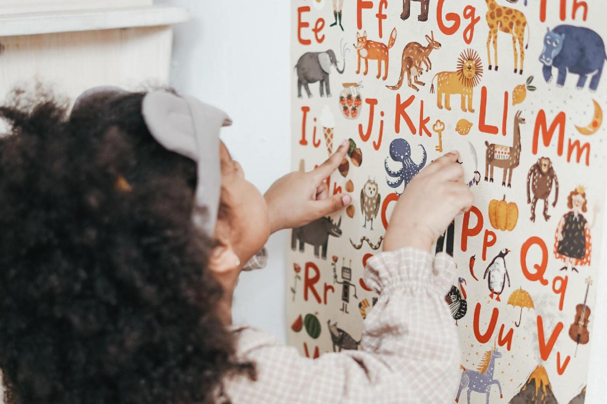

¿Qué es la Neuropsicología?
La Neuropsicología es una neurociencia que estudia la relación del cerebro y la conducta. Se trata de una rama de la Psicología que estudia la evaluación, diagnostico, prevención e intervención de diversas alteraciones, así como trastornos neurológicos, del neurodesarrollo y del aprendizaje entre otros.
Desde Neurodiverso evaluamos a cada persona teniendo en cuenta sus necesidades, con el propósito de crear un programa de intervención que trate de dar solución a su dificultad.
Basaremos la intervención en los resultados de la evaluación, de donde se extraerán los puntos fuertes y débiles de la persona. Con este perfil cognitivo se establecerá unos objetivos para optimizar los recursos mediante la rehabilitación del déficit, ya sea con métodos de restauración o compensación.
El tratamiento consiste principalmente en estimular las redes neuronales con dificultades, rehabilitando funciones cognitivas deficitarias o mal desarrolladas. Por lo que el abanico de áreas que se trabajan es amplio, incluyendo: atención, memoria, aprendizaje, concentración, inhibición, funciones lingüísticas y funciones ejecutivas.
Todo esto favorecerá aspectos emocionales y conductuales, así como la motivación, la autoestima o el estado de ánimo.
• Se hará participes a los padres y familiares para ampliar al máximo las posibilidades de mejora, mediante pautas de trabajo y adaptaciones del entorno.
• Periódicamente se hará una valoración de la evolución, para revisar el progreso y ajustar el programa de intervención.
• La intervención neurocognitiva se puede orientar tanto a población infanto-juvenil como a adultos que presenten dificultades de aprendizaje
• La frecuencia de las sesiones se adapta a las necesidades de cada persona. Siendo de una, dos o tres sesiones a la semana, según la gravedad del déficit y el ritmo de aprendizaje.